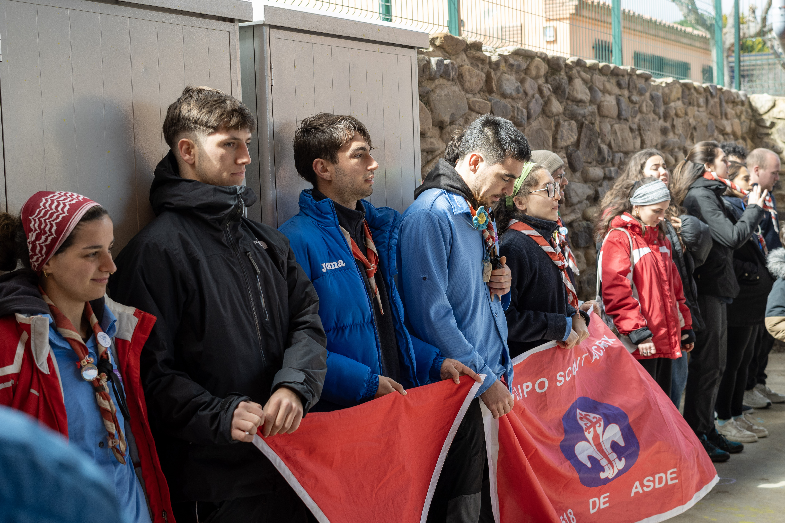
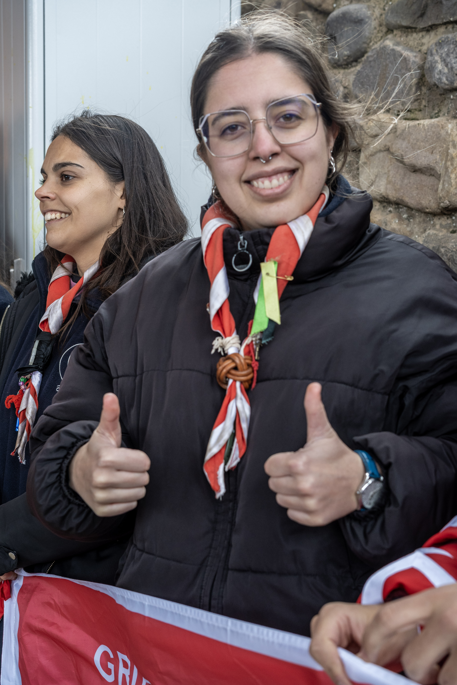

Más de cuatro décadas formando ciudadanos libres, responsables y comprometidos con la naturaleza bajo la pañoleta carmesí y blanco nieve.
El Grupo Scout ACRUX 518 nació en 1977 integrado en ASDE Scouts de España y Exploradores de Castilla y León. Nuestro nombre hace honor a la estrella más brillante de la constelación de la Cruz del Sur, guía de los navegantes y símbolo de nuestro rumbo educativo.

El rojo carmesí simboliza la energía, el afecto y la hermandad del grupo; el borde blanco nieve representa la lealtad, la paz y la pureza de las cumbres.
Aplicamos el Método Scout de Baden-Powell: educación activa a través del juego, el pequeño grupo (seisenas y patrullas) y el contacto directo con la naturaleza.

Detrás de cada reunión de sábado y cada campamento hay un equipo de jóvenes adultos voluntarios con titulación oficial de Tiempo Libre de la Junta de Castilla y León.
Logística, Pedagogía y Kraal
En la Colonia Ohiensis y en la Manada Khanhiwara nuestros educadores adoptan los nombres simbólicos de los cuentos y de El Libro de las Tierras Vírgenes:
Todo lo que necesitáis saber antes de venir vuestro primer sábado al Grupo Scout ACRUX 518: